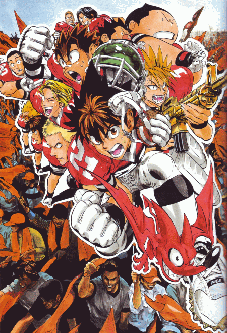

-
Alternative Names: ES21; Eyeshield21
Author(s): Inagaki Riichiro; Murata Yuusuke
Genres:Comedy, Drama, Schounen, Sports
Release: 2002
Status: Complete
Type: Manga
Length: 37 Volumes 333 Chapters
Read Online @:

More Infor @:

Notes
A cowardly errand boy gets turned into a legendary running back, Eyeshield 21. A unique team gets built up and fight in tournaments of American Football. The captain always has some sort of firearm on his person and has a dog called cerberus that helps the team with their running practice.